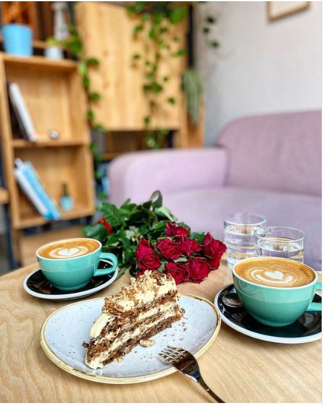
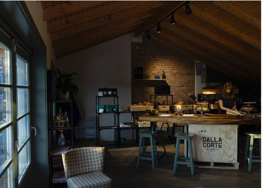
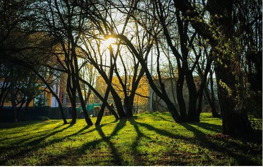
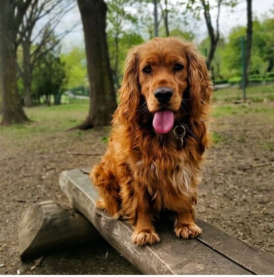
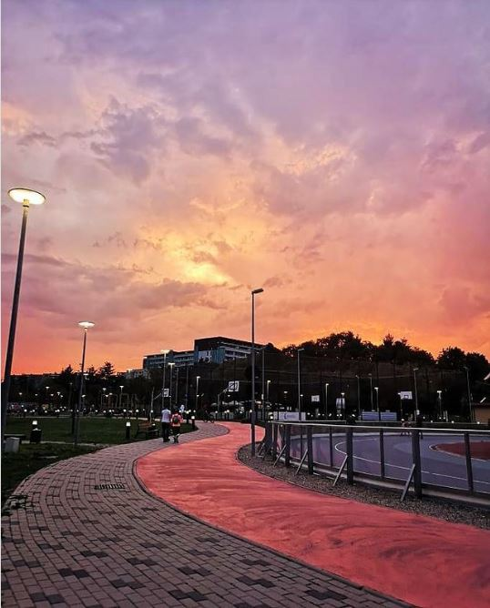
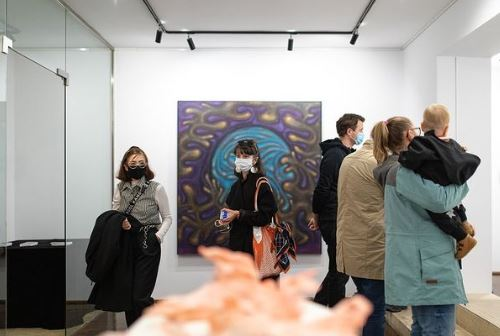
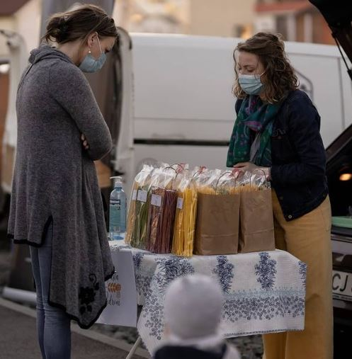
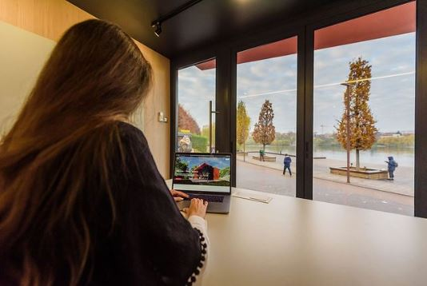

Vine frigul, ziua e din ce în ce mai scurtă, iar parcă ție îți piere tot mai mult cheful de ieșit în oraș. Preferi să stai la căldură, cu un ceai bun alături și să privești la un ecran oarecare serialul preferat. Dacă mai și lucrezi de acasă – bingo! – ce motive să mai ai să ieși departe de casă? Ei bine, ca să nu sperii statisticile din aplicațiile care îți monitorizează sănătatea, o plimbare prin cartierul în care locuiești este mereu binevenită. Astfel, noi am luat-o deja la pas prin cartierul Gheorgheni ca să împărtășim cu tine locurile în care poți să evadezi și să fii, în același timp, aproape de casă.
În această serie de articole ne propunem să vizităm cartierele importante ale Clujului și să le descoperim comorile. Un fel de Treasure Hunt am îndrăzni să îi spunem. Facem astfel o listă cu recomandări diverse, de la localuri cochete la parcuri mai puțin cunoscute, în care poți ieși să te relaxezi singur sau cu prietenii. Și, de ce nu, poate cu prima ocazie îți vei scoate și rudele sau amicii care vin să te viziteze la o escapadă… prin cartier ;).
În funcție de zona în care începi călătoria, e musai să iei cu tine la drum o cafea care să îți încălzească sufletul. Sau un ceai. Cafenele to go găsești mai la tot pasul, iar în acest caz poți pleca cu termosul de acasă. Știi povestea, cu gesturi mărunte contribuim împreuna la un ecosistem sustenabil. În zona Iulius Mall îți recomandăm standul Meron din parc sau aproape de FSEGA poți să poposești la ROOTS.
La capătul opus de Gheorgheni, în zona străzii Constantin Brâncuși, poți să te oprești la Gook, o brutărie artizanală plină de bunătățuri. În vecinătate se află și il Caffé(sau Vechea Prăjitorie), un loc de unde poți reface stocurile de cafea de specialitate și în care poți să te lași învăluit de aromele distinse ale boabelor de cafea premium.
Parcul Detunata este o opțiune bună dacă vrei să te simți ca în mijlocul naturii. Ai suficient loc să îți agăți un hamac sau să îți pui direct pătura pe jos pentru un picnic așa cum se cuvine. Poți comanda fără griji ceva bun de mâncare de pe aplicațiile de delivery și să te bucuri de alegerile făcute direct în parc. Sau te poți orienta către alt parc, deoarece avantajul cartierului Gheorgheni este că e bogat în spații verzi, locuri de joacă și zone de relaxare pentru toate preferințele. Așadar, dacă vrei să îl scoți pe cel mic la joacă, ai toate șansele ca o zonă special amenajată să îți iasă în cale.
Mai mult, există și zone special concepute pentru plimbat câini. Spre exemplu, aproape de Baza Sportivă Gheorgheni se află un astfel de parc în care își dau întâlnire iubitorii de animale. Zonele sunt safe, îngrădite, pentru ca animăluțul tău să zburde în voie fără ca tu să te temi că ar putea să fie în pericol. Un alt loc de acest fel este în proximitatea Iulius Mall, aproape de sensul giratoriu (sau în coordonate puțin mai exacte, pe partea opusă mall-ului).
Bineînțeles, când auzi Gheorgheni te gândești la Baza Sportivă Gheorgheni. Într-adevăr, aici poți desfășura o gamă variată de activități fizice. De la fitness, aerobic, alergat, ture cu bicicleta sau cu rolele, aici mai poți închiria și unul din terenuri pentru un meci de fotbal cu prietenii. După cum spuneam și înainte, cartierul e plin de parcuri și zone de agrement în care poți să faci sport. Poți face ture de alergat în timp ce admiri lacul de la Iulius, te poți pierde pe cărările din Detunata și să îți testezi limitele pe scări sau poți să îți întinzi salteaua de fitness în parcul din spatele blocului. Așa, ca să nu mai ai scuze.
Poți hrăni spiritul creativ cu o vizită la Zina Gallery, o galerie de artă contemporană fondată în 2020 și situată pe strada Axente Sever nr. 14A. Programul îți recomandăm să îl consulți de fiecare dată când ai în plan să îți delectezi simțurile vizuale cu opere care ies din tipare. Dar ca fapt divers, de regulă, în zilele de duminică și luni galeria este închisă. După programul actual de funcționare, poți trece pragul galeriei între orele 15 și 19, în toate celealte zile ale săptămânii. În zonă este și Il caffe și Gook, ca să completezi pe deplin ieșirea în cartier.
În sezonul cald se deschide piața volantă (la capătul liniilor de autobuz 24B, 3 etc.) în care producătorii locali te așteaptă cu produse fresh, numai bune de savurat. De asemenea, poți face o vizită pe tot parcursul anului în Piața Hermes unde, la fel, vei găsi produse de sezon. Dacă mersul la piață nu face parte din agenda ta, poți testa cum e să faci piața online. Adică să comanzi online de la producătorii locali și aceștia să îți aducă pachetul la o anumită locație, la o anumită oră și într-o anumită zi. Este vorba despre ROA Cluj, o inițiativă care aduce mai aproape producători din diferite sfere de activitate și care te așteaptă să îți iei pachetul în parcare la Hotel Univers T.
Mai mult, poți trece pragul și magazinului propriu USAMV, în care găsești de la produse lactate la fructe și legume sau flori de sezon, în funcție de perioada anului. E aproape de Stațiunea de Cercetări Horticole, pe strada Liviu Rebreanu.
Știi deja cât de mult ne preocupă acest subiect, așa că nu puteam să nu includem în acest articol și informații din această sferă. Astfel, poți recicla sacul cu PET-uri la automatul din parcarea Kaufland Gheorgheni. În plus, poți beneficia și de oferte sau reduceri la anumite produse, win-win. Alte zone smart de reciclat sunt în Baza Sportivă din Gheorgheni unde poți selecta cartonul și deșeurile din plastic. Avem și un articol despre reciclat, poți da un ochi și peste el dacă este de interes pentru tine sau îl poți share-ui cu prietenii care au nevoie de informații. Știm sigur că mai peste tot sunt amenajate spații de colectare selectivă a deșeurile, așa că te încurajăm să le folosești și, la rândul tău, să fii un exemplu pentru comunitatea din jurul tău.
Ne-am plimbat suficient pentru acest final de săptămână prin Gheorgheni. La fel ca noi, probabil îți poți imagina deja o hartă cu toate aceste hidden gems și un traseu orientativ de parcurs în weekend. Noi cu siguranță vom fi prin zonă ca să completăm și să actualizăm lista.
Până data viitoare când ne dăm întâlnire în alt cartier, tu ce alte zone mai puțin cunoscute din Gheorgheni dorești să le împărtășești cu noi? De la parcuri, piețe, ziduri colorate sau cafenele, așteptăm cu interes părerea ta, iar noi o vom face cunoscută.
La început a fost… nimeni și nimic care să ne vorbească despre viața orașului, despre ce se întâmplă în materie de evenimente și localuri pe plan local, niciun motiv care să ne scoată din casă.
Everyday we’re clujlife(ing). Ieșim din casă, vedem ce se întâmplă, ce mai e nou, ce mai zice lumea, ce-ar mai fi interesant de făcut, și apoi îți povestim și ție. Facem asta din Ianuarie 2008. Prezența aceasta îndelungată ne-a adus destule cunoștințe și curaj încât să abordăm subiecte pe care nu le ”atinge” nimeni. Avem informații pe care nu le găsești în altă parte și acces la mulți oameni din varii domenii.